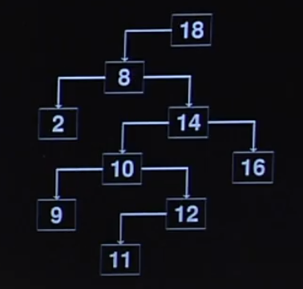
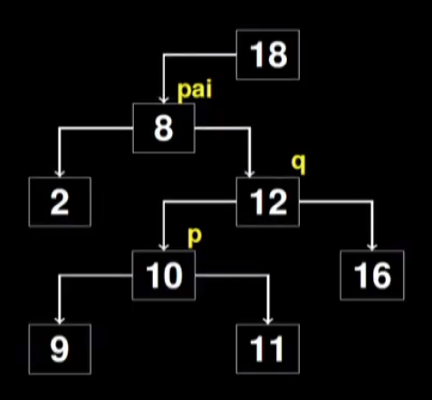

Disciplinas
-
ESTRUTURA DE DADOS-T01-2024-1 Concluído
Materiais
Vídeo 2 - Estrutura de Dados - Aula 18 - Árvores binárias de pesquisa - Parte 3. sendProf° ministrante: Norton T. Roman.
Conteúdo
Estrutura de Dados.
Árvores binárias de pesquisa.Remoção de um elemento.
Remoção de um elemento.
ABP – Remoção.- Problemas na remoção de um nó:
- Temos que lidar com as subárvores desse nó A árvore resultante deve continuar sendo de busca.
- Nós da subárvore da esquerda têm chave menor que a do nó raiz.
- Nós da subárvore da direita têm chave maior que a do nó raiz.
- Como fazer?
- Se o nó a ser retirado possui no máximo um descendente, substitua-o por este.
- Se o nó possuir 2 descendentes, substituímos o nó a ser retirado pelo nó mais à direita da subárvore da esquerda.
- Alternativamente, substituímos o nó a ser retirado pelo nó mais à esquerda da subárvore da direita.
- Ou seja...
- Para removermos o 15:
- Ou substituímos pelo 12 E 10 passa a ser filho de 8.
- Ou substituímos pelo 20.

- Para remover, precisamos então saber:
- O nó a ser removido.
- Seu pai.
- O nó substituto.
- Seu pai.
/* Busca binária não recursiva. Devolve o ponteiro do nó buscado. Abastece pai com o ponteiro para o nó pai deste /*
PONT buscaNo (PONT raiz, TIPOCHAVE ch, PONT *pai) {
PONT atual = raiz;
*pai = NULL;
while (atual) {
if (atual -> chave == ch) return (atual);
*pai atual;
if (ch < atual -> chave) atual = atual -> esq;
else atual = atual -> dir;
}
return (NULL);
}

PONT removeNo (PONT raiz, TIPOCHAVE ch) {
PONT pai, no, p, q;
no = buscaNo (raiz,ch, &pai);
if (no == NULL) return (raiz);
Tratamos o caso do nó removido ter no máximo um filho:
if (!no -> esq || !no - >dir ) {
if (!no -> esq) q = no -> dir;
else q = no -> esq;
}
Ou de ter 2 filhos:
else {
P = no;
q = no -> esq;
while (q -> dir) {
P = q;
q = q -> dir;
}
Além de tratarmos do caso do pai do substituto ser ou não o nó removido:
if (p != no) {
p -> dir = q -> esq;
q -> esq = no -> esq;
}
q -> dir = no -> dir;
}
Do nó removido ser a Raiz:
if (!pai) {
free(no);
return(q);
}
Ou de não ser a Raiz:
if (ch < pai -> chave) pai -> esq = q;
else pai -> dir = q;
free(no);
return (raiz);
}

ABP - Balanceamento.
- Podemos ter então a eficiência de uma busca binária, caso a árvore esteja balanceada Com a vantagem de ser uma estrutura dinâmica.
- Ou voltamos à busca sequencial, como em uma lista ligada Só que usando mais memória, pelo ponteiro extra.
- A boa notícia é que se os elementos que compõem a árvore forem obtidos aleatoriamente, espera-se um desempenho apenas 39% pior do que a árvore completamente balanceada.
- Ou seja, a árvore em que as folhas aparecem no mesmo nível ou, no máximo, em dois níveis adjacentes.